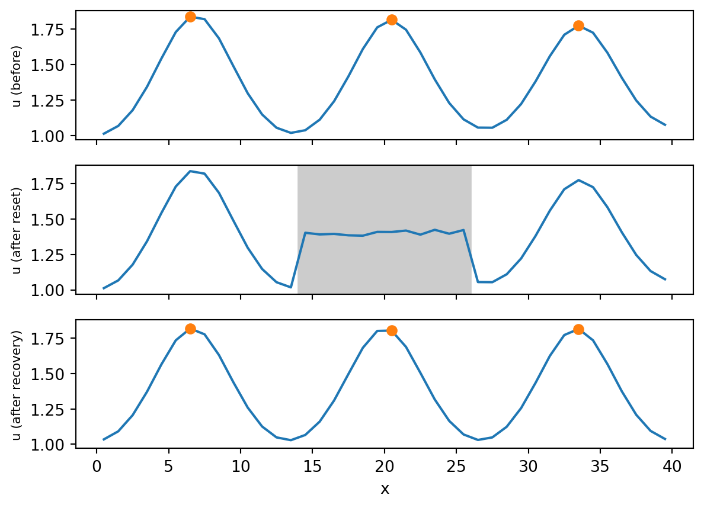

peak positions before: [6, 20, 33]
peak positions after: [6, 20, 33]
Module 4: Space and Pattern Formation
The linear theory of this module says what a reaction-diffusion system can do. It does not say that a real tissue does it. This page collects what Kondo and Miura (2010) report as evidence, separates simulation matches from experimental tests, and lists the caveats that the authors themselves give. Everything stated about a biological system below is a statement of that review. The chemical experiments with the CIMA reaction cited on Reaction-Diffusion Equations are not discussed in the review and are not covered here.
| System | Proposed activation and inhibition | Evidence described in the review | Status stated in the review |
|---|---|---|---|
| Stripes on the skin of fish (Pomacanthus imperator, zebrafish) | Interactions between pigment cells: mutual inhibition of black and yellow cells acts as a positive feedback loop | Dynamic behaviour of the pattern. After laser ablation of pigment cells in two black stripes of zebrafish, the lower stripe shifts and settles with the spacing preserved, which a Turing simulation predicts | The network differs from Turing’s original one but fits the activation and inhibition description. Molecular identification is under way |
| Hair follicle spacing in mouse | Wnt as short-range activator, Dkk as long-range inhibitor | A simulation predicted a ringed Wnt expression pattern that does not occur naturally, and ectopic production of Wnt was reported to confirm it. Changing the amount of the factors changes the pattern as simulated | Described as a critically important result because the same two factors act in other patterning processes |
| Feather buds in chick | not specified in the review | The periodic pattern regenerates when the skin is recombined from dissociated cells | Listed among well-studied examples |
| Travelling wave of hair formation in a mouse mutant | FGF and BMP | A wave moves across the skin over the life of the animals, which corresponds to the oscillatory travelling case | Identified in the review with the travelling-wave case of Turing’s classification |
| Left-right asymmetry | Nodal enhances itself and Lefty, and Lefty inhibits Nodal | Lefty spreads further than Nodal, as long-range inhibition requires | Fulfils the basic requirements according to the review |
| Limb precartilage condensation | Transforming growth factor beta as candidate activator | Dissociated limb cells in culture form nearly periodic patterns, and adding the factor changes them as predicted by the model | No inhibitor identified |
| Lung branching, Hydra regeneration | Wnt and Dkk are involved | Same molecules as in the skin examples | Involvement of the same molecules does not by itself prove the same mechanism |
The review also lists seashell, feather and fish-skin patterns that have been simulated with modified reaction-diffusion systems, and observes that a close resemblance “points strongly” to the mechanism. Combined with the warning above, this resemblance is to be read as motivation for a test, not as the test. The caption of the review’s Figure 4 adds that the involvement of the mechanism in some of the listed phenomena has not been fully accepted by experimental researchers.
The one dynamic property that the review stresses most for the skin is robustness: the pattern re-forms with its characteristic spacing after a disturbance. The same property is easy to check in the laboratory model. The code evolves the 1D Gierer-Meinhardt system of Case A on \((0, 40)\) to a pattern, then resets the fields to the uniform state with 1% noise on the interval \((14, 26)\), which contains one peak, and lets the system evolve again. The procedure is an analogy to the ablation experiment, not a model of fish skin: in the model the chemical concentrations are reset, whereas in the experiment the pigment cells are removed.
peak positions before: [6, 20, 33]
peak positions after: [6, 20, 33]
In this run the peaks sit at the same grid positions before and after the reset. With the noise of two other seeds the result was the same, and for a reset of the interval \((0, 12)\) one peak moved by one grid point in two of the three seeds. The pattern is not a memory of the removed region. It is pinned by the parts that were left intact and by the boundary conditions, and the new peak fits into the gap with the same spacing, as in the zebrafish experiment.
A group simulates a two-species reaction-diffusion model on a fish-shaped domain and obtains a stripe pattern that looks like the one on the animal. Using only the criteria of Kondo and Miura (2010), list three observations that would make the claim stronger, and one statement that the simulation cannot support. Then explain why the condition \(d > 1\) of the Turing Conditions page is not by itself a prediction about molecular diffusion in tissue.
Stronger evidence comes from the dynamic properties that the model predicts and that can be measured: the response of the pattern to a perturbation such as ablation of part of it, the rearrangement of stripes as the animal grows, and the effect of changing one interaction, for instance by a mutation or an inhibitor, on the spacing. In each case the model must predict the outcome before the experiment, as the Wnt example does. The simulation alone cannot support the statement that the molecules in the model are the ones in the animal, because a similar pattern can come from different networks.
The inequality \(d > 1\) was derived for diffusing species with the Laplacian as the only transport term. The review stresses that the real requirement is short-range positive and long-range negative feedback, and that this range can be created by other forms of signalling, such as cell-to-cell relays. In the zebrafish example the circuit consists of two negative interactions between pigment cells that act as a positive loop, and it does not have the structure of the diffusing pair of the original model. The ratio \(d\) is the diffusive way of realising the longer range of inhibition.